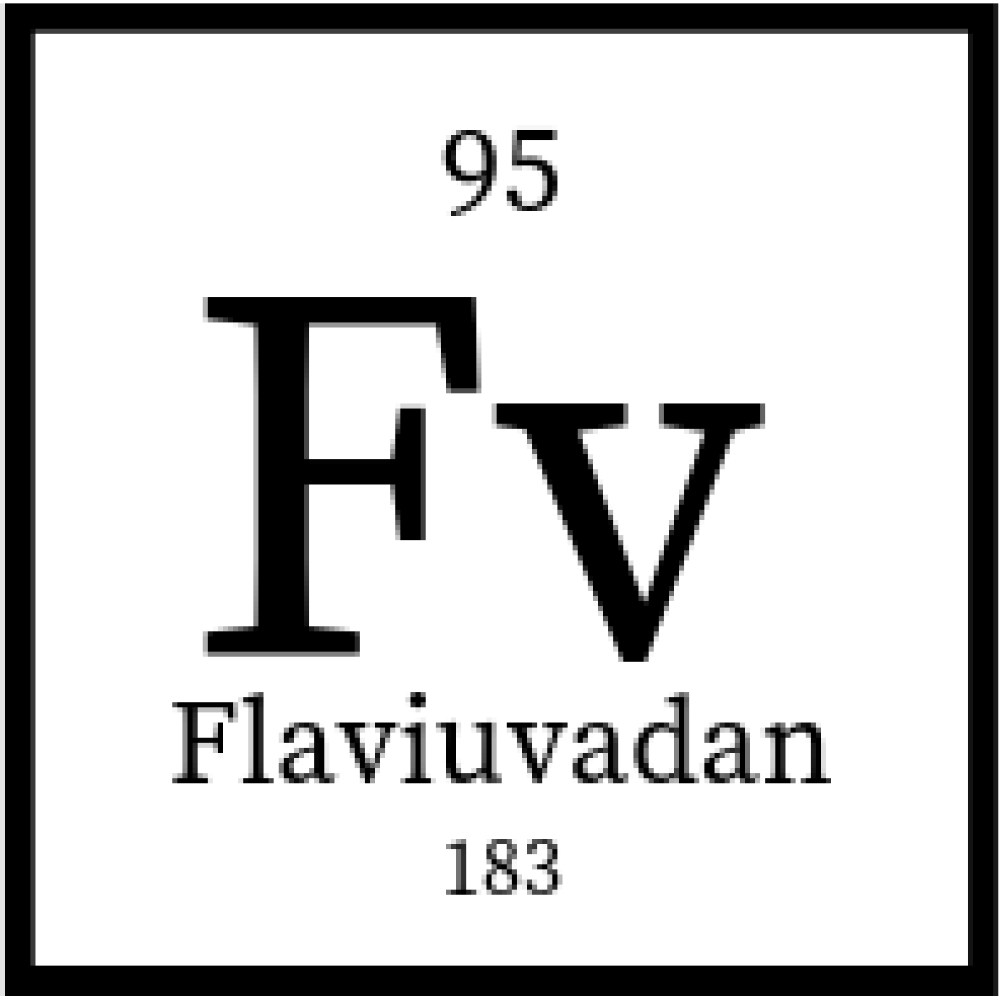

Well, I couldn’t, so far, find anyone with a personal website written in R Markdown. There are many tutorials one can find online for creating a personal website. For example, Jekyll (Ruby on Rails), WordPress, I think a friend of mine wrote one in Haskell, etc. I used R Markdown for a Statistics class during my undergraduate and I though of giving it a shot! It’s Markdown, it’s neat and organized. I used to have a Typescript/Angular personal website but that is overkill… I still have the repo if you’d like to compare it with R Markdown. The files for this website are available on my GitHub profile!
Here’s my profile! I sometimes write code for fun, for classes (soon not anymore), or, most importantly, for learning purposes. I have a repo that contains the code for my honors project, which contains a lot of data and is pretty interesting! This profile is also mine as I created a different account for the internship I pursued (contributions are kind of expiring though.. so will not keep this one around for long).
Here’s my profile! I really like networking because it’s amazing how helpful people are! I really hope one day.. maybe one day.. I will have the chance to exchange expertise with other people as well!
Here’s my profile! Not a big tweeter but I follow a lot of interesting people and this is the social media medium that’s left over for me, really.
Here’s my profile! Ok, I really like this one. I started writing short blogs during my internship at Vendasta and I plan on posting more things. I haven’t had the chance though… because of my final year of undergraduate. I have stuff I have been thinking about though! And I will post it!